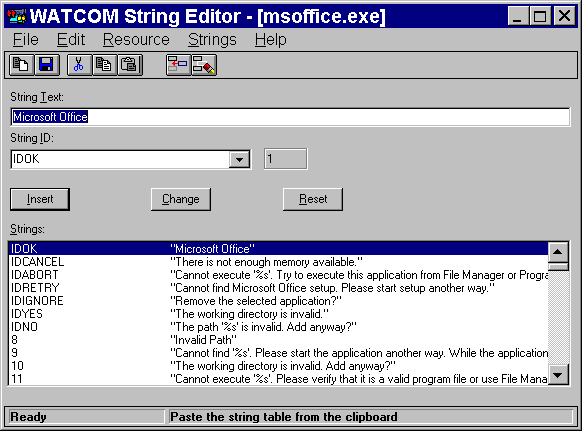
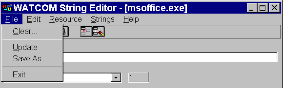
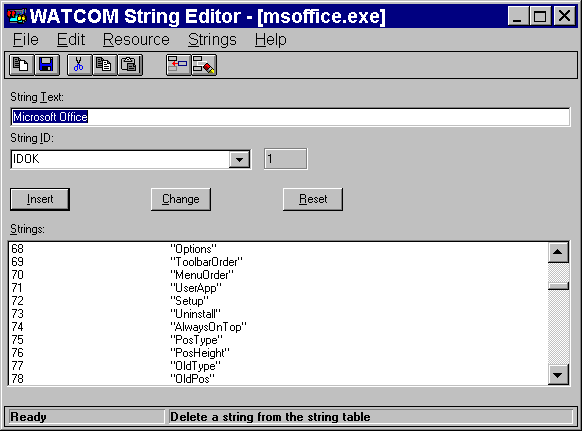
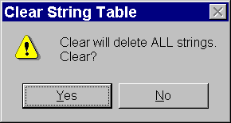

Index of Topics
- - A -
- Adding a New String Item
- C -
- Changing an Existing String Item
Creating a New String Table
- D -
- Deleting a String Item
Deleting All String Items
Deleting String Items
- O -
- The Open Watcom String Editor
Opening an Existing String Table
- Q -
- Quitting the String Editor
- S -
- Saving String Items
Starting the String Editor
The String Editor Menu Bar
The String Editor Toolbar
String Editor: Action Buttons
String Editor: Changing Memory Options
String Editor: Copy To
String Editor: Save As
String Editor: Update
String Functions
String ID Field
String Text Field
Strings List
- U -
- Using Shortcuts to Create String Tables
Using the String Editor
Using the String Editor Window
The Open Watcom String Editor
To group together text strings in your application, you can use string tables. A string table is a list of strings
such as error messages, prompts, and other text you want your application to display. Each string in the string table
has a unique number, called an identifier, associated with it. When the application presents the user with a message,
it searches for the appropriate identifier and displays the associated string, regardless of the textual content of the string.
The Open Watcom String Editor enables you to create string tables for your application. The String Editor stores
these tables in the resource file. You can have multiple string tables in a resource file, which allows you to logically
group the text strings for your application. Since a string table is simply another Windows resource that is separate
from the source code, you can use the String Editor to do such things as translate your strings into another language or
make your strings more concise without having to change the source code.
Using the String Editor
This section discusses the following topics:
- Starting the String Editor
- Quitting the String Editor
- The String Editor Menu Bar
- The String Editor Toolbar
Starting the String Editor
The String Editor may be invoked in one of two ways. The first involves first starting the Resource Editor then
starting the String Editor. The second way the editor may be started is from the Open Watcom IDE.
To start the String Editor from the Resource Editor, you must first open the Resource Editor. How you proceed
depends on whether you are opening a new (empty) string table or an existing string table. The String Editor works
on resources found in resource files.

Figure 1. The String Editor window
Creating a New String Table
- To create a new string table:
-
(1)
- Double click on the Resource Editor icon in your Windows Program Manager.
The Open Watcom Resource Editor window opens.
(2)
- Open a new or existing resource file.
(3)
- Choose New from the Resource menu.
A cascading menu appears from the New menu item.
(4)
- Choose String from the New cascading menu.
The Open Watcom String Editor window opens which contains an empty Strings list.
Opening an Existing String Table
- To edit the contents of an existing string table:
-
(1)
- Double click on the Resource Editor icon in your Windows Program Manager.
The Open Watcom Resource Editor window opens.
(2)
- Open an existing resource file.
The Resource window for the existing resource file displays buttons representing each existing resource type.
(3)
- Select the string table button to view all existing string tables.
or
- Choose Menu from the cascading menu that appears when you choose View from the Resource menu.
The String Tables list appears revealing all string tables in this resource file.
(4)
- Double click on the existing string table you want to open.
or
- Click on the desired string table to select it, then choose Edit from the Resource menu on the Open Watcom
Resource Editor window.
The Open Watcom String Editor window opens and displays the existing string items for the selected string table.
Quitting the String Editor
To exit the String Editor, choose Exit from the File menu of the Open Watcom String Editor window.
If you made changes to strings but did not save the information, a message box prompts you to save before exiting.
Choose Yes to save the changes and exit the String Editor, No to exit the String Editor without saving the changes,
or Cancel to return to the String Editor.
When you exit the String Editor, the application remembers the directory in which you last opened or saved a string
table (not the resource file). The next time you open a string table, the last directory accessed appears in the File
Selection dialog so you do not have to reenter its path. This feature makes the String Editor more convenient and efficient
to use.

Figure 2. The String Editor menu bar
The menu bar consists of the following five menus:
- File
- Clear and save the string table, and exit the String Editor
Edit
- Access the clipboard functions, hide or show the toolbar, and delete a string item
Resource
- Change the string table memory flags and copy it into another resource file
String
- Insert a new string item
Help
- Access on-line help information
To see the function of an item in the menu bar, position your cursor over the item and hold down the mouse button.
A description of the item appears in the status line at the bottom of the screen. If you do not want to select the
menu item, drag the cursor off of the menu item before releasing the mouse button.
In the Open Watcom String Editor window, the toolbar appears below the menu bar. When the toolbar is shown choose
Hide Toolbar from the Edit menu to hide it. When the toolbar is hidden you can display it by choosing Show Toolbar
from the Edit menu.

Figure 3. You can access seven String Editor functions from the toolbar.
The following explains the function each toolbar button performs, as well as the equivalent menu item.
- Clear
- Clear the string table. This is equivalent to the item Clear in the File menu.
Update
- Update the resource file with this string table. This is equivalent to the item Update in the File menu.
Cut
- Cut the current string table to the clipboard. This is equivalent to the item Cut in the Edit menu.
Copy
- Copy the current string table to the clipboard. This is equivalent to the item Copy in the Edit menu.
Paste
- Paste the string table from the clipboard to the current string table. This is equivalent to the item Paste in the Edit
menu.
Insert
- Insert the new string item into the string table. This is equivalent to the item Insert New Item in the Strings menu.
Delete
- Delete the selected string item from the string table. This is equivalent to the item Delete in the Edit menu.
To see the function of an item in the toolbar, position your cursor over the desired button. A description of the
button's function appears in the status line at the bottom of the window.
Using the String Editor Window
The Open Watcom String Editor window contains a menu bar, toolbar, and status line to help you create and edit string
items. The rest of the window, the workspace, is divided into four sections:
- String Text Field
- String ID Field
- Action Buttons
- Strings List

Figure 4. The String Editor window contains a menu bar, toolbar, workspace, and status
line.
String Text Field
The String Text field in the Open Watcom String Editor window contains the text for the string item you are defining.
Whatever appears in this field will appear in your application.
String ID Field
The two String ID fields contains:
- the identifier associated with the string item
- the symbol information for the specified string
Creating a string item automatically creates a relationship between the string item and its identifier, the String ID.
In your source code you reference the string item by its String ID.
- Note:
- Both String ID fields currently contain the same numerical information because the String Editor does not yet support symbols.
The action buttons control how the information in the attributes area is handled by the editor. The Insert button
will use the contents of the attributes area to create a new entry in the string table. The Change button will use
the contents of the attributes area to modify the current entry in the string table. The Reset button will discard
the contents of the attributes area and reset them to those of the current entry in the string table. The Insert button
is the default button when the ENTER key is pressed and no other button has the focus.
Strings List
The Strings list displays all of the string items in the current string table. The string items appear in ascending
numerical order by String ID.
String Functions
You can perform several functions with the String Editor. This section describes the following tasks:
- Adding a New String Item
- Changing an Existing String Item
- Deleting String Items
- Saving String Items
- Using Shortcuts to Create String Tables
- Changing Memory Options
Adding a New String Item
The steps for adding a new string item to the Strings list are the same, regardless of whether the Strings list is empty
or already contains string items.
- To add a new string item:
-
(1)
- Enter the text that you want to appear in the application in the String Text Field of the Open Watcom String Editor
window.
The text that will be displayed in your application appears exactly as you enter it in this field.
(2)
- Enter symbol or numeric identifier fo the string.
The identifier you enter here is associated with the string item. This is the identifier by which your source code
references the string.
(3)
- Press the Insert action button
or
- Choose Insert New Item from the Strings menu.
or
- Select the Insert New Item button on the toolbar.
The String Editor adds the new string item to the Strings list. The editor automatically arranges the strings in
order by String ID.
Changing an Existing String Item
You may want to change the text or identifier for a string item in the Strings list.
- To modify an existing sting table item:
-
(1)
- Choose the string table you want to work with from the Resource window on the Open Watcom Resource Editor window.
The String Editor window appears displaying all of the string items for the selected string table.
(2)
- Click on the string item from the Strings list that you want to modify.
The selected string item appears highlighted in the Strings list.
(3)
- Change the String Item or String ID field.
(4)
- Press the Change action button
These actions update the selected string item with the modified string item details.
Deleting String Items
These are two functions you can use to delete string items from the Strings list:
The Delete item in the Edit menu deletes the selected string item. You can delete only one string item at a time
with this function.
The Clear item in the File menu deletes all string items in the current string table. This is a powerful function
and must be used carefully to avoid accidentally deleting an entire String list.
Deleting a String Item
To delete string items from the current string table one at a time:
- (1)
- Select the string item you want to delete from the Strings table by clicking on it.
The selected string item is highlighted.
(2)
- Choose Delete from the Edit menu
or
- Select the Delete button from the toolbar.
The String Editor removes the selected string item from the Strings list.
(3)
- Choose Update from the File menu to save the string table changes.
Deleting All String Items
To delete all string items in the current string table:
- (1)
- Choose Clear from the File menu
or
- Select the Clear button on the toolbar.
A message box appears prompting you to verify that you want to clear all of the string items from the current string table.
(2)
- Choose Yes, No, or Cancel to continue.
Choosing Yes removes all string items from the current string table. The Strings list is left empty.

Figure 5. As a safety feature, a message box appears when you choose the Clear function.
Saving String Items
There are three functions you can use to save string tables with the String Editor:
Each of these options performs a different type of save function. This section describes how to use each function.
String Editor: Update
After modifying a string item in a string table, choose Update from the File menu on the String Editor window to save
the updated string table to the current resource file. This prevents the changes from being lost when you exit the
String Editor.
The Update function updates the resource file only at the resource level. The resource file is not saved until
you perform a save at the Resource Editor level as well. Exiting the Resource Editor without saving causes you to lose
the string table changes made.
String Editor: Save As
Choose Save As from the File menu on the String Editor window to save the current string table to another resource file.
A Save Menu dialog appears where you specify the resource file to which you want to save the current string table.

Figure 6. On the Save Menu dialog, specify the resource file to which you want to save
the string table.
- Important:
- If the resource file to which you are saving the string table already contains resources, the existing resources will be discarded
and replaced with the string table you are saving.
String Editor: Copy To
Choose Copy To from the Resource menu on the String Editor window to copy the current string table into an existing resource
file. A Copy To dialog appears where you specify the resource file to which you want to copy the current string table.
Unlike the Save As function, copying a string table to a resource file adds an entry to the list of resources rather
than replacing the existing resources with the new entry.

Figure 7. On the Copy To dialog, specify the resource file to which you want to copy the
String list.
Using Shortcuts to Create String Tables
The Edit menu on the Open Watcom String Editor window contains some standard Windows options that you can use to quickly
create string tables. The options are:
These options allow you to perform functions on a string table but not on individual string items.
- Cut
- Choose Cut from the Edit menu of the String Editor window to cut the Strings list from the current string table and paste
it to the clipboard.
Copy
- Choose Copy from the Edit menu of the String Editor window to copy the String list in the current string table to the clipboard.
Paste
- Choose Paste from the Edit menu of the String Editor window to copy the string table on the clipboard into the current String
list.
String Editor: Changing Memory Options
The Memory Flags option allows you to change the selected memory options for the current string table. These options
indicate the memory type and loading instructions.

Figure 8. Changing memory options
- To set the memory flags for a string table:
-
(1)
- Choose Memory Flags from the Resource menu of the Open Watcom String Editor window.
The Memory Options dialog opens displaying either the current or default memory options.
(2)
- Select the required flags in the Memory Options and Load Options sections of the dialog by clicking on the check box
beside the field.
Following is a description of each option.
- Moveable
- Selecting this option marks this string table to be stored in moveable memory when it is loaded by an application.
Discardable
- Selecting this option marks this string table to be stored in discardable memory when it is loaded by an application.
Pure
- When marked as Pure, Windows will not allow the memory that the string table is loaded into to be modified.
Preload
- All string tables marked as Preload will be loaded when the application for which you are creating the string table is loaded.
LoadOnCall
- String tables marked as LoadOnCall will be loaded only when an application issues a call to load them.
(3)
- Click on OK when all memory option selects are made.
The Memory Options dialog closes returning you to the String Editor window.